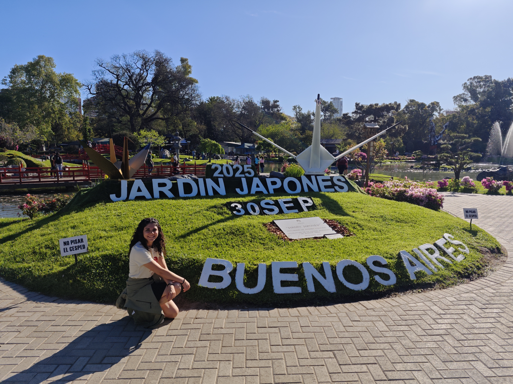
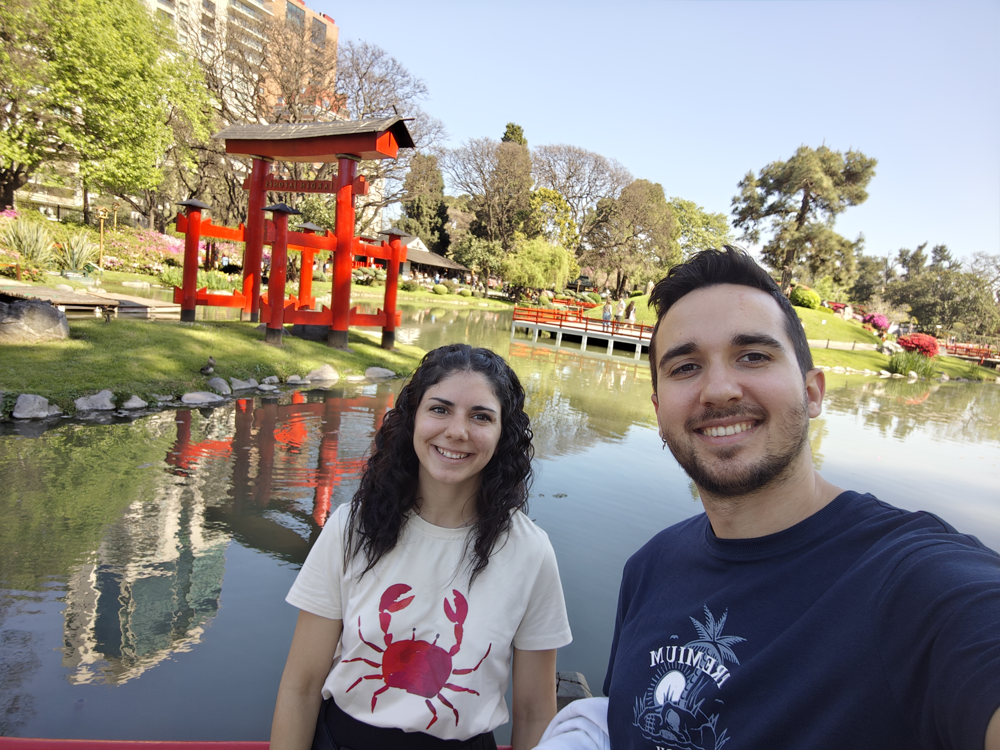
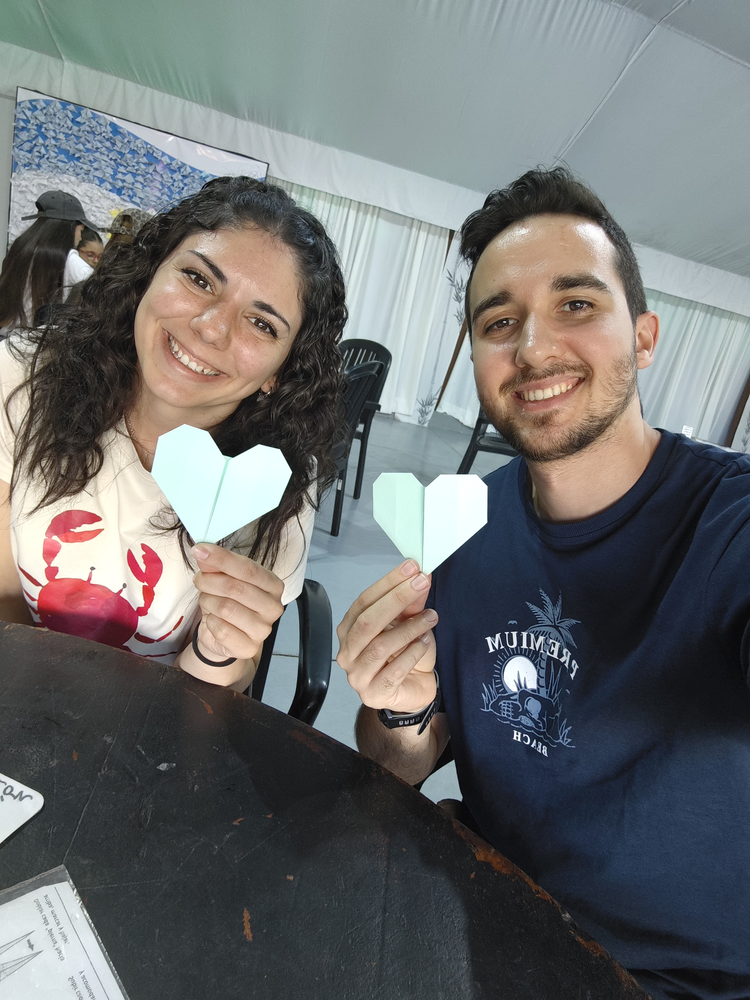
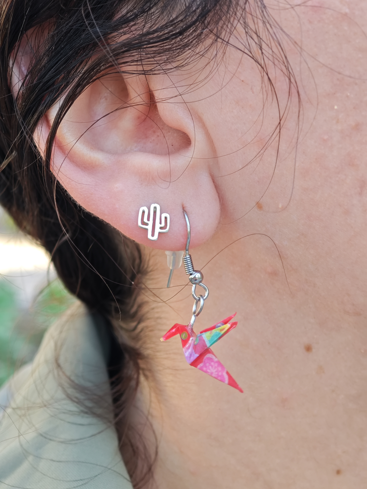
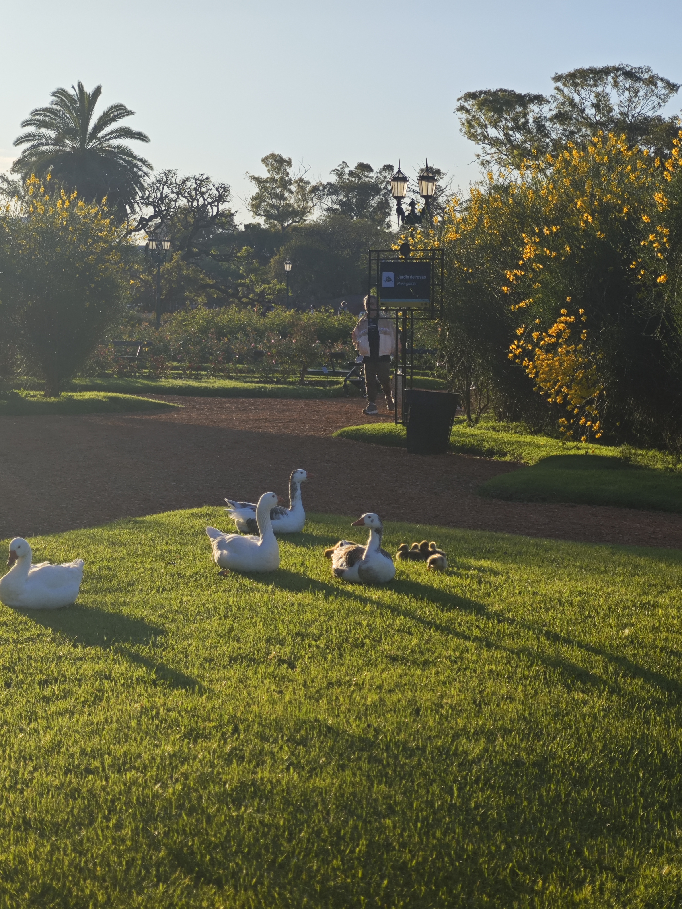
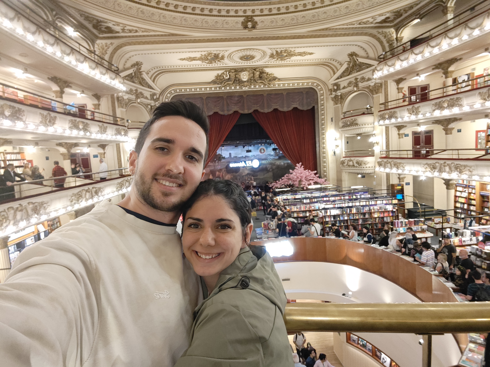
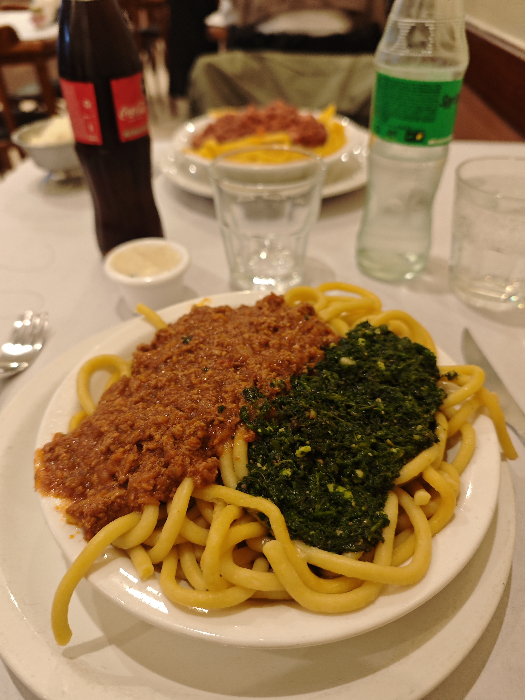

Desayunamos en el hotel, aunque fue el peor desayuno de todo el viaje hasta ahora. Y eso que es un NH, que esperábamos más. Sin desanimar nos, a las 10:00 nos esperaba nuestra guía para hacer un completo city tour por Buenos Aires. Salimos con el coche rumbo a la zona histórica de la ciudad.
🍳 Comienzo del Día
📵 Nota sobre fotos
No hay fotos del city tour ni de Caminito tomadas por nosotros. La guía nos recomendó encarecidamente no sacar el móvil durante el recorrido por riesgo de robos, así que no documentamos con fotos los momentos del paseo.
🏛️ El Corazón de Buenos Aires
Nos llevaron a la Plaza de Mayo, donde admiramos la icónica Casa Rosada mientras nuestra guía nos contaba la fascinante historia de Buenos Aires. Luego visitamos la Catedral Metropolitana, que supuestamente se había inspirado en la Catedral de Jaén, aunque honestamente no se parecía en nada. A pesar de eso, era extraordinariamente hermosa, con un suelo de piedritas tipo mosaico que la hacía única.
La guía nos explicó la importancia histórica de dos figuras clave: Sarmiento, dedicado a la educación y enseñanza del pueblo, y San Martín, quien luchó por la independencia del país. Ambos dejaron un legado imborrable en la nación.
💱 Cambio de Divisas
Aprovechamos una calle para cambiar dinero en un local que conocía nuestra guía: nos ofrecieron un tipo de cambio muy favorable.
Tipo de cambio: 1€ = 1500 ARS
🎨 Caminito: El Barrio Pintoresco
Continuamos en coche visitando distintos sitios de la ciudad. Llegamos a la zona de Caminito, ubicada junto al estadio del Boca Juniors. La zona es increíblemente pintoresca, con sus calles coloreadas y su atmósfera bohemia.
Nos dejaron pasear por la calle principal, donde nos ofrecían fotos con bailarines de tango. Había tiendas de recuerdos y souvenirs por todas partes. Compramos un imán más para nuestra colección. La zona era visualmente hermosa pero, como nos advirtió nuestra guía, estaba cerca de una zona chunga, así que tuvimos cuidado.
🎭 El Encanto de Caminito
La calle principal con sus casas de colores vibrantes, los bailarines de tango en cada esquina, el aroma de la historia del tango argentino flotando en el aire... Caminito es un lugar que captura la esencia bohemia de Buenos Aires. A pesar de ser una zona turística, tiene un auténtico encanto que es difícil de resistir.
🏘️ La Otra Buenos Aires: Zona Brasil
Pasamos por coche por la Zona Brasil, una área ubicada debajo de un puente donde la realidad es diferente. Allí vimos cómo las personas construyen sus casas con lo que pueden encontrar. Fue un contraste fuerte que nos mostró diferentes facetas de la ciudad.
⚰️ Puerto Madero y el Cementerio de Recoleta
Continuamos hacia Puerto Madero, una zona moderna y revitalizada. Luego llegamos a Recoleta, cerca del famoso cementerio. Nuestra guía nos sugirió visitarlo, contándonos que es el 3er cementerio más importante del mundo por sus obras arquitectónicas. Sin embargo, la entrada costaba alrededor de 12€, y decidimos no entrar en esta ocasión.
⚰️ Cementerio de Recoleta
Ubicación: Barrio de Recoleta, Buenos Aires
Importancia: 3er cementerio más importante del mundo
Entrada: ~12€
Nota: Decidimos no visitarlo esta vez, pero sin duda vale la pena
🍽️ Un Choripán y Una Tentación de Tango
Buscábamos un sitio para comer cuando un local del lado nos asaltó con una invitación irresistible: estaban haciendo un show de tango. María quedó fascinada y quiso quedarse, pero a mí no me hacía muy buena pinta. Así que solo pedí una Pepsi mientras María se pidió un choripán, que resulta que no estaba tan malo.
Compartimos el choripán y decidimos ahorrar apetito para la noche, ya que aquí los platos son enormes. De esta forma tendríamos más hambre para cenar adecuadamente.
🎭 El Dilema del Tango
María quedó encantada con el show de tango, con sus movimientos sensuales y la pasión de los bailarines. Yo preferí ser prudente y mantenerme escéptico, pero no puedo negar que la energía del lugar era palpable. El choripán fue una pequeña compensación por no quedarnos a ver el espectáculo completo.
🌸 El Jardín Japonés Encantador
Caminamos hasta el Jardín Japonés y pagamos la entrada. Fue una decisión excelente. El jardín tiene un encanto especial, con sus puentes, estanques y plantas cuidadosamente seleccionadas.
En una zona del jardín, nos permitían hacer papiroflexia (origami). Creamos grullas de papel para contribuir a un proyecto benéfico que buscaba hacer un millón de grullas. Además, hicimos un corazón también de papel. Fue una experiencia muy especial que conectaba con la filosofía zen del jardín.

🌸 Tranquilidad y belleza en el Jardín Japonés
🌸 Jardín Japonés
Papiroflexia en el Jardín Japonés
Pendiente de grulla origami🌳 Parque 3 de Febrero: Naturaleza Urbana
Desde el Jardín Japonés fuimos al Parque 3 de Febrero, un espacio emblemático donde la gente va a hacer deporte, pasear y disfrutar. El parque tiene un canal con barcas y estaba lleno de ocas con sus crías, que eran absolutamente hermosas. Lo mejor es que no se asustaban de los visitantes, lo que permitía disfrutar de su compañía sin molestarlas.
Pasamos un rato leyendo en el parque, disfrutando de la paz que transmitía el lugar. Fue un momento de descanso perfecto después de tanta actividad turística.

🦆 Las adorables ocas del Parque 3 de Febrero📚 Librería El Ateneo: Templo del Conocimiento
Pedimos un Uber hasta la Librería El Ateneo, una institución única en Buenos Aires. Se encuentra en un antiguo teatro completamente restaurado y transformado en una magnífica librería. Es una experiencia sensorial completa: la arquitectura del teatro, los balcones, las galerías, todo convertido en estanterías de libros.

📚 Librería El Ateneo: Un antiguo teatro convertido en librería🍝 Bar Pippo Paraná: Tradición desde 1936
Continuamos andando hasta el restaurante que ya teníamos reservado: Bar Pippo Paraná. Este bar es legendario en Buenos Aires, funcionando desde 1936 y siendo famoso por sus pastas auténticas.
Pedimos una pasta con tuco y pesto: se trataba de espaguetis muy gordos con una salsa de tomate (tuco) y otra de pesto. Estaban extraordinariamente buenos, aunque el pesto me persiguió toda la noche. María pidió tallarines con bolognese. El bar tenía ese aspecto de antiguo bar español, con un servicio muy acelerado pero muy económico. La calidad-precio era excelente.
🍝 Bar Pippo Paraná
Fundación: 1936
Especialidad: Pastas auténticas argentinas
Plato de Cristian: Pasta con tuco y pesto (espaguetis gordos)
Plato de María: Tallarines con bolognese
Veredicto: Excelente relación calidad-precio, comida deliciosa
Nota especial: El pesto fue muy potente 😄

🍝 Nuestras deliciosas pastas en el legendario Bar Pippo Paraná
📺 Noche de Entretenimiento
De vuelta en el hotel, nos pusimos a ver varios capítulos de la serie del bunker que estamos siguiendo. Fue una forma tranquila de cerrar un día intenso y lleno de experiencias.
"Buenos Aires nos envolvió con su historia, su arte, su tango y sus sabores. Un día que capturó la esencia de una ciudad que no deja de sorprender." 🌆❤️